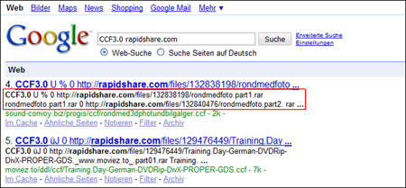
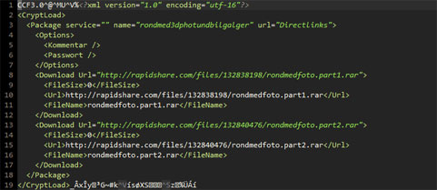
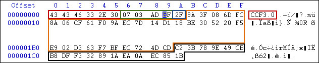
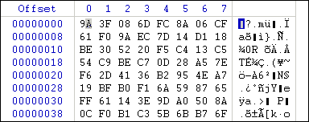
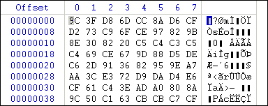
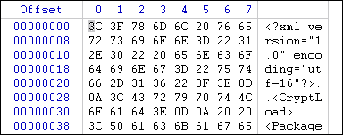
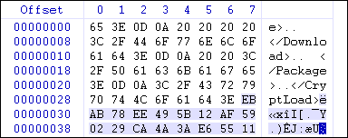

Lustiger Weise sind Gerüchte aufgetaucht, dass wir in Verbindung mit dem JDownloader-Team stünden, was aber nicht der Wahrheit entspricht. Wir haben und hatten noch nie Kontakt mit den Entwicklern und dieser Artikel soll auch keineswegs eine Werbeaktion für DLC sein. Wir wollten nur betonen, dass das JD-Team immer schon kooperativer war und ihr Container zwar ebenfalls kein Allheilmittel ist, gegen öffentliche Decrypter aber einen kleinen Schutz bietet.
Mitunter ein Grund für die Offenlegung war, dass bei einem Teil der Container gar keine Kodierung ("Verschlüsselung") stattfindet.
Seit CryptLoad 1.1.3 verwendet der auf Microsoft .NET basierende, proprietäre Downloader für bekannte One-Click-Hoster ein neues Format für die Verschlüsselung von Links. CCF Version 3.0 soll "genau so sicher wie das DLC Format" sein, heißt es im offiziellen Wiki. Dieser wagemutigen Behauptung wollen wir auf den Grund gehen. Wer sich einen fertigen CCF-Decrypter erwartet, ist hier aber falsch.
Fertige Entschlüsselungsprogramme wird es von uns auch niemals geben. Wir möchten aber im Dienste der Wissenschaft das grundlegend fehlerhafte Designkonzept dieser Kinderzimmer-Crypto offenlegen, um Uploadern zu verdeutlichen, wie unsicher CCFs wirklich sind.
Am besten natürlich gar keinen. Da dies in der Praxis aber unrealistisch ist, sollte man zumindest auf DLC zurückgreifen. DLC verwendet für die Entschlüsselung einen eigenen Server, wodurch der Entschlüsselungsprozess kurzfristig ausgesetzt werden kann, falls ein öffentlicher Decrypter im Netz auftaucht. Der Nachteil solch eines zentralistischen Systems ist natürlich, dass man sich auf Gedeih und Verderb den Administratoren von JDownloader.org ausliefert. Schmeißen die das Handtuch, sind theoretisch alle Container unbrauchbar. Natürlich ist auch DLC kein Heilmittel und ein Decrypter schnell geschrieben; nur falls dieser eben ver&oouml;ffentlicht wird, kann er sehr schnell unbrauchbar gemacht werden.
Das hat mehrere Gründe. Zum einen natürlich unser Geltungsbedarf, zum anderen die restriktiven Lizenzbedingungen von CryptLoad. Im Gegensatz zu JDownloader gibt es CL nur für Windows. Der Source-Code ist außerdem nicht einsehbar und man kann die Software getrost in die Kategorie Adware einordnen. In den Kategorien Usability und Zuverlässigkeit macht es Windows Vista den letzten Platz strittig; User alternativer Betriebssysteme wie Mac OS X oder Linux werden außerdem einfach außen vor gelassen.
Mit CryptLoad 0.7 wurde der erste Container überhaupt eingeführt. Damals setzte man auf einen 256 Bit starken Key in Verbindung mit einem 128 Bit IV und auf das als besonders sicher geltende, symmetrische Verschlüsselungsverfahren Rijndael (Wikipedia). Schon damals waren die Entwickler nicht bereit, mit Schneewiesel, dem Programmierer der Konkurrenzsoftware RSD (Schneewiesel) zu kooperieren (schon wieder ein Grund …). Schneewiesel gelang es aber mittels Reverse Engineering an den Key zu gelangen und konnte die Entschlüsselungsmethode in sein eigenes Programm einbauen, woraufhin mit CryptLoad 0.8 der Key geändert wurde. Zwischendurch kam es zur Entwicklung eines eigenen Containerformats für den RSD – RSDF war geboren.
Es baut ebenfalls auf Rijndael auf, verwendete zur Speicherung aber kein XML. Der Key wurde bald, eingebettet in einen in Python geschriebenen Decrypter von DrHansen (rsd_decrypter_04.rar), publik gemacht und seit dem nicht mehr geändert. CryptLoad änderte einmal noch den Key mit Version 1.0, gab das Katz-und-Maus-Spiel dann aber auf.
Es musste ein völlig neues Konzept her, dachten sich die Entwickler, und führten mit CryptLoad 1.1.3 CCF 3.0 ein. Anstatt auf ein bekanntes, quelloffenes Verfahren zu setzen, entwickelten sie ihr eigenes. Mit weitreichenden Folgen: CCF3.0 ist "broken by design" und verschlüsselt unter bestimmten Umständen die Links nicht einmal.
 
Ein CCF besteht aus drei Teilen:
struct header {
char header[6];
uint32 magic;
unsigned char padding;
};
Die Entschlüsselung soll anhand eines Containers (Download test.ccf) gezeigt werden.

Die Werte aus der Datei benötigen wir später.
Für die Entschlüsselung nehmen wir den Datenblock inklusive des Paddings (0x9A3F … 851B; hier orange und schwarz umrandet) heran. Durch die blockweise Verschlüsselung muss die Anzahl der ausgewählten Bytes durch 64 ohne Rest dividierbar sein. Fürs Erste reicht es, wenn wir den ersten 64-Byte-Block decrypten. Die restlichen Blocks gehen analog dazu.
Nehmen wir uns den ersten Block vor (erste Grafik).
 
Der Magic-Wert von weiter oben kommt wieder ins Spiel. Die folgenden Operationen werden auf jedes Byte aus dem Block angewendet:
Durch das Vertauschen werden kurioserweise manche Bytes im Block mehrmals modifiziert, manche dafür überhaupt nicht.
Zur besseren Erleuterung noch einmal in C-Code:
for (i = 0; i < 64; i++) {
if ((magic & 1) != 0) {
rotateright(&magic, (magic & 0xff) % 12);
} else {
rotateleft(&magic, (magic & 0xff) % 9);
}
buffer[i] = (unsigned char)(buffer[i] ^ ((unsigned char)(magic & 0xff)));
bigmatr(buffer);
}
Als nächstes nehmen wir uns die Zeilen einzeln vor. Jetzt geht es noch eine Stufe tiefer, nämlich auf die Bit-Ebene. Die folgenden Anweisungen gelten für alle 8 Zeilen je 64-Byte-Block.
Und noch einmal der C-Code:
for (j = 0; j < 8; j++) {
for (k = 0; k < 8; k++) {
x[k] = buffer[(j * 8) + k];
}
for (m = 0; m < 8; m++) {
x[m] = (unsigned char)(x[m] ^ ((unsigned char)(magic & 0xff)));
smallmatr(x);
if ((magic & 1) != 0) {
rotateright(&magic, magic & 12);
} else {
rotateleft(&magic, magic & 9);
}
}
for (n = 0; n < 8; n++) {
buffer[(j * 8) + n] = x[n];
}
}
Wie auf dem ersten Bild zu sehen, kann man dann wenn man alles richtig gemacht hat, den ersten Block des unverschlüsselten CCFs erkennen.
 
Das eingesetzte "Kryptographie-Verfahren" funktioniert nur, wenn sich die zu verschlüsselnden Daten in 64-Byte-Blöcke einteilen lassen. Dies ist aber praktisch nie der Fall. Deshalb fügt man oft mit dem Zufallsgenerator erzeugte Bytes hinzu, bis der Block voll ist (Screenshot rechts, markierte Bytes). Diese Bytes nennt man Padding (dt. "Polsterung").
CryptLoad speichert, wie weiter oben ja bereits analysiert wurde, die Anzahl der Padding-Bytes als Ergänzung auf 64 im 10. Byte des CCF. In diesem Bespiel war das Padding 0x11 = 17 Bytes lang.
Der Magic-Wert stellt sozusagen den Key für die Entschlüsselung dar. Dem Verfahren liegt CRC zugrunde, jedoch ist es abgewandelt worden und nicht kompatibel. Berechnet wird der Wert aus dem zu verschüsselendem XML-File.
Was ist aber, wenn das niedrigste Byte des CRC z. B. 0x00 ist? Dann findet nur eine gewöhnliche XOR-Kodierung statt, die peinlicherweise auch noch im zweiten Schritt wieder aufgehoben wird. Dies ist aber nicht nur beim Wert 0x00 so. Es gibt mehrere Werte, die die Verschlüsselung außer Kraft setzen.